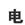

KANJIDAMAGE
Intro
Kanji facts
How to
Tags
Kanji
Radicals
Appendix
Onyomi
Ill pairs
Dupes
Articles
Long short vowels
Synonyms
← Previous
Number 56
Next →
田
rice field
★★★★★
5 strokes
BETA
PK
PN
You'll probably see this more in people's names than you ever will see rice paddies.
Onyomi
Mnemonic
Kunyomi
た
Only used in peoples' names: 田中(たなか） is the Japanese version of Smith.
★★☆☆☆
Jukugo
田舎
(
いなか
)
countryside
★★★☆☆
FP
田
(rice field) +
舎
(stable) = 田舎 (countryside)
the countryside,hicksville
Used In
町
畑
胃
思
男
畜
細
里
描
果
東
猫
猥
畳
鼻
申
番
奮
魚
雷
曽
異
更

単
獣
略
留
界
 KANJIDAMAGE
KANJIDAMAGE
 Number
56
Number
56